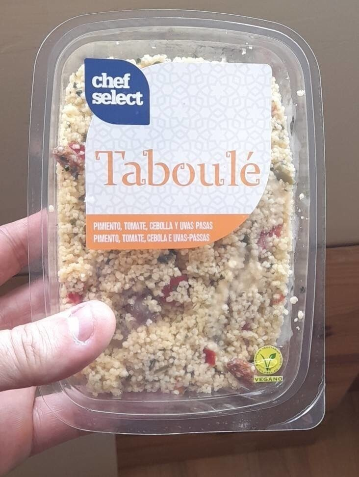

Tabouli

Description
Tabouli is likely the topmost famed Mediterranean/Middle Eastern salad there is.
Because it is now sold in most large supermarkets around the world,
I feel compelled to dispel one thing: the “star of the show," so to speak,
in a tabouli recipe is not the bulgur. The idea is to have a little bulgur with
the salad, not a little salad with your bulgur.
What is in Tabouli Salad?
The true star in a tabouli recipe is the very finely chopped parsley--lots of it!
Parsley holds well against the citrus in the dressing; that's why tabouli is even better the
next day. Some tabouli recipes like this one, call for a few fresh mint leaves and green onions,
while others use only parsley and red onions instead.
This recipe is closest to the version I grew up with, but feel free to make it your own.
Ingredients
- ½ cup fine bulgur wheat
- 4 firm Roma tomatoes, very finely chopped
- 1 English cucumber (hothouse cucumber), very finely chopped
- 2 bunches parsley, part of the stems removed, washed and well-dried, very finely chopped
- 12-15 fresh mint leaves, stems removed, washed, well-dried, very finely chopped
- 4 green onions, white and green parts, very finely chopped Salt
- 3-4 tablespoon lime juice (lemon juice, if you prefer)
- 3-4 tablespoon Early Harvest extra virgin olive oil
- Romaine lettuce leaves to serve, optional
Steps
- Wash the bulgur wheat and soak it in water for 5-7 minute. Drain very well
(squeeze the bulgur wheat by hand to get rid of any excess water). Set aside.
- Very finely chop the vegetables, herbs and green onions as indicated above.
Be sure to place the tomatoes in a colander to drain excess juice.
- Place the chopped vegetables, herbs and green onions in a mixing bowl or dish. Add the bulgur and season with salt. Mix gently.
- Now add the the lime juice and olive oil and mix again.
- For best results, cover the tabouli and refrigerate for 30 minutes. Transfer to a serving platter.
If you like, serve the tabouli with a side of pita and romaine lettuce leaves, which act as wraps or "boats" for the tabouli.
- Other appetizers to serve next to tabouli salad:Hummus; Baba Ganoush; or Roasted Red Pepper Hummus